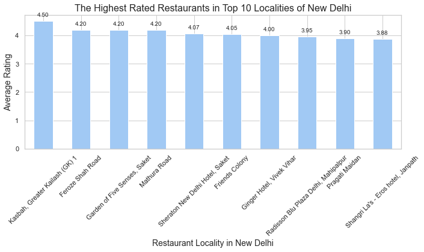
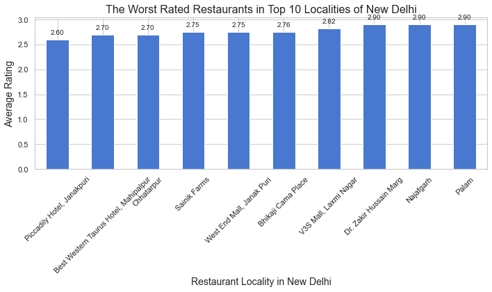
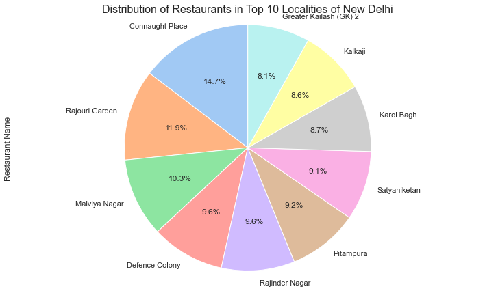

Introduction
In the heart of a vibrant metropolis, this project navigates through the diverse tapestry of neighborhoods within an expansive urban landscape. Distinct districts, each with its unique character, contribute to the rich cultural mosaic of the region. The population, spanning millions, converges in a harmonious blend of tradition and modernity, shaping the essence of this sprawling urban center.
The journey goes beyond statistical analysis, integrating real-world insights through the FourSquare API . This API facilitates the identification of venues in each neighborhood, adding a layer of proximity to the culinary narrative. Leveraging aggregative ratings, the project discerns the standout dining destinations.
Visualization becomes a powerful tool in this exploration, as the Folium library paints a vivid picture of neighborhood rankings. Through an amalgamation of data sources, this project aims to unravel the culinary delights embedded in the fabric of a city, offering a comprehensive guide to the diverse and dynamic dining experiences within its bounds.
Exploratiory Data Analysis and Visualization
-
What are the variations in average restaurant ratings across different localities in a City, and how can this information be leveraged to identify the top-rated culinary neighborhoods?

In our city's diverse culinary landscape, the revelation that Kasbah in Greater Kailash boasts the highest average restaurant rating at an impressive 4.5 unveils a culinary haven. This locality, nestled in the city's heart, has garnered acclaim for its diverse and top-notch dining establishments, offering a symphony of flavors that captivate the palates of discerning diners.

Conversely, Janakpuri stands in stark contrast, holding the lowest average restaurant rating of 2.6. Despite its dynamic and bustling atmosphere, this locality has faced challenges in achieving culinary excellence, reflecting a range of experiences that have left room for improvement.
This information serves as a compass for residents, tourists, entrepreneurs, and local businesses alike. Residents in Kasbah can confidently explore the diverse culinary offerings within their locality, while those in Janakpuri might consider neighboring localities with higher average ratings. Entrepreneurs and investors can use this data to guide investment decisions, and local businesses can leverage their positive ratings for marketing. Additionally, city planners can utilize this information to understand the dynamics of different localities and identify areas for potential development in the culinary infrastructure. In essence, these extreme ratings provide valuable insights into the city's culinary tapestry, steering both enthusiasts and industry players toward excellence and improvement within the dynamic cityscape.
-
How does the distribution of restaurants in the top 10 localities vary, and what insights can be gleaned from the percentage share of Connaught Place, the locality with the highest concentration of restaurants?

The distribution of the top number of restaurants across the city, with Connaught Place claiming the highest share at 14.7%, provides valuable insights into the culinary landscape. This information is instrumental for both residents and visitors seeking diverse dining options. For residents, it highlights Connaught Place as a thriving hub with a rich array of culinary choices, influencing their dining preferences and potentially encouraging local businesses. Tourists, armed with the knowledge that Connaught Place boasts the highest number of restaurants, may be drawn to explore this area for its diverse gastronomic offerings. Additionally, this data is pertinent for urban planners and policymakers as it sheds light on the popularity and vibrancy of specific localities, guiding decisions related to infrastructure, tourism, and economic development. For entrepreneurs in the food industry, understanding the concentration of restaurants in Connaught Place can inform business strategies, providing an indication of high demand and competition. In essence, this pie chart serves as a visual guide, unraveling the city's culinary hotspots and offering practical insights for residents, tourists, businesses, and policymakers alike.
Kmeans Clustering
The application of K-means clustering has bestowed a fascinating revelation, categorizing localities into distinct clusters based on the most recommended types of cuisine
Cluster 1 (Red) emerges as a haven for enthusiasts of Indian cuisine, where a myriad of authentic flavors and culinary experiences await.
Cluster 2 (Green), on the other hand, beckons those in search of luxurious gastronomy, hosting an array of hotels and nightclubs that promise not only delectable meals but an immersive dining ambiance.
Fast food enthusiasts find their haven in both Cluster 3 (Blue) and Cluster 5(Orange), where localities within these clusters boast an abundance of quick and flavorsome bites.
Lastly, Cluster 4 (Yellow) emerges as the go-to destination for cafe connoisseurs and pizza aficionados, where cozy cafes and pizzerias create an atmosphere conducive to relaxation and indulgence.
This clustering analysis not only serves as a gastronomic guide for residents and visitors but also holds significant implications for entrepreneurs and restaurateurs seeking strategic insights into the optimal locales for specific culinary ventures. It unveils the diverse and nuanced nature of our city's culinary landscape, steering both food enthusiasts and business pioneers toward the rich and varied experiences each cluster has to offer.